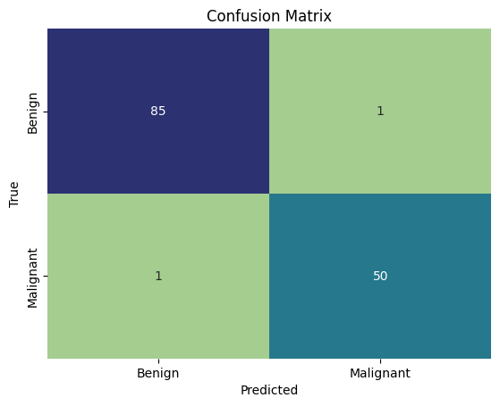

Introduction
In this project, we develop an Artificial Neural Network (ANN) model for breast cancer classification based on the classic Wisconsin Breast Cancer dataset.
The model classifies tumors into two diagnostic categories: - 2 = Benign (non-cancerous) - 4 = Malignant (cancerous)
The dataset contains 11 columns and 683 patient records collected from clinical fine needle aspirate (FNA) biopsies.
Importing the libraries
We begin by loading the essential Python libraries for data processing, deep learning with TensorFlow / Keras, and visualization.
import pandas as pd
import numpy as np
import tensorflow as tf
import matplotlib.pyplot as plt
import seaborn as snsImporting the dataset
Next, we load the dataset from Data.csv.
dataset = pd.read_csv('Data.csv')Check the Data
Let’s inspect the first few rows of the dataset to examine the feature space:
dataset.head() Sample code number Clump Thickness Uniformity of Cell Size \
0 1000025 5 1
1 1002945 5 4
2 1015425 3 1
3 1016277 6 8
4 1017023 4 1
Uniformity of Cell Shape Marginal Adhesion Single Epithelial Cell Size \
0 1 1 2
1 4 5 7
2 1 1 2
3 8 1 3
4 1 3 2
Bare Nuclei Bland Chromatin Normal Nucleoli Mitoses Class
0 1 3 1 1 2
1 10 3 2 1 2
2 2 3 1 1 2
3 4 3 7 1 2
4 1 3 1 1 2 Let’s check the data types and verify that there are no missing values:
dataset.info()<class 'pandas.core.frame.DataFrame'>
RangeIndex: 683 entries, 0 to 682
Data columns (total 11 columns):
# Column Non-Null Count Dtype
--- ------ -------------- -----
0 Sample code number 683 non-null int64
1 Clump Thickness 683 non-null int64
2 Uniformity of Cell Size 683 non-null int64
3 Uniformity of Cell Shape 683 non-null int64
4 Marginal Adhesion 683 non-null int64
5 Single Epithelial Cell Size 683 non-null int64
6 Bare Nuclei 683 non-null int64
7 Bland Chromatin 683 non-null int64
8 Normal Nucleoli 683 non-null int64
9 Mitoses 683 non-null int64
10 Class 683 non-null int64
dtypes: int64(11)
memory usage: 58.8 KBdataset.isnull().sum()Sample code number 0
Clump Thickness 0
Uniformity of Cell Size 0
Uniformity of Cell Shape 0
Marginal Adhesion 0
Single Epithelial Cell Size 0
Bare Nuclei 0
Bland Chromatin 0
Normal Nucleoli 0
Mitoses 0
Class 0
dtype: int64There are zero missing values across all 683 instances.
Transform Data
We separate our features X (excluding the ID column Sample code number and target column Class) and target variable y.
To prepare for binary classification in neural networks, we encode the labels: - 0 for Benign (Class == 2) - 1 for Malignant (Class == 4)
X = dataset.iloc[:, 1:-1].values
y = dataset.iloc[:, -1].values
y = np.where(y == 2, 0, 1)Splitting the dataset into the Training set and Test set
We perform an 80/20 train-test split, reserving 20% of the data (137 samples) to evaluate generalizability:
from sklearn.model_selection import train_test_split
X_train, X_test, y_train, y_test = train_test_split(X, y, test_size=0.2, random_state=11)Feature Scaling the Dataset
Neural networks use gradient descent optimization, which converges much faster and more reliably when all input features are on a standardized scale. We apply StandardScaler (Z-score normalization) fit exclusively on the training set:
from sklearn.preprocessing import StandardScaler
sc = StandardScaler()
X_train = sc.fit_transform(X_train)
X_test = sc.transform(X_test)Building ANN Model
We build a feed-forward sequential neural network using TensorFlow / Keras.
ann = tf.keras.models.Sequential()Adding output layer
For binary classification, our output layer consists of a single neuron with a sigmoid activation function, outputting a probability between 0 and 1:
ann.add(tf.keras.layers.Dense(units=1, activation='sigmoid'))Compile the ANN Model
We compile the network using the adam optimizer and binary_crossentropy as our loss function, tracking classification accuracy:
ann.compile(optimizer='adam', loss='binary_crossentropy', metrics=['accuracy'])Training the ANN Model
We train the model on X_train with a batch size of 32 over 100 epochs:
ann.fit(X_train, y_train, batch_size=32, epochs=100)Epoch 1/100
18/18 [==============================] - 2s 5ms/step - accuracy: 0.1076 - loss: 0.7738
Epoch 2/100
18/18 [==============================] - 0s 5ms/step - accuracy: 0.2668 - loss: 0.7041
Epoch 3/100
18/18 [==============================] - 0s 5ms/step - accuracy: 0.5978 - loss: 0.6490
Epoch 4/100
18/18 [==============================] - 0s 5ms/step - accuracy: 0.7442 - loss: 0.6170
...
Epoch 100/100
18/18 [==============================] - 0s 5ms/step - accuracy: 0.9780 - loss: 0.0521Over 100 epochs, the training loss decreases steadily while training accuracy reaches ~97.8%.
Evaluating the Model with Confusion Matrix
Finally, we evaluate the trained ANN on our held-out test set (X_test). We convert predicted probabilities to binary class predictions using a decision threshold of 0.5, and compute the test accuracy and confusion matrix:
from sklearn.metrics import confusion_matrix, accuracy_score
y_pred = ann.predict(X_test)
y_pred = (y_pred > 0.5)
cm = confusion_matrix(y_test, y_pred)
accuracy = accuracy_score(y_test, y_pred)
print('accuracy of model : {:.2f}%'.format(accuracy * 100))
sns.heatmap(cm, annot=True, cmap="crest", cbar=False,
xticklabels=['Benign', 'Malignant'],
yticklabels=['Benign', 'Malignant'])
plt.title('Confusion Matrix')
plt.xlabel('Predicted')
plt.ylabel('True')
plt.show()accuracy of model : 98.54%
Evaluation Highlights:
- Test Accuracy: The model achieves 98.54% accuracy on unseen test data (135 out of 137 correctly diagnosed).
- Confusion Matrix Breakdown:
- True Benign correctly predicted: 85 / 86 (only 1 false positive).
- True Malignant correctly predicted: 50 / 51 (only 1 false negative).
- In medical diagnostics, minimizing false negatives (misclassifying malignant tumors as benign) is critical, and the network demonstrates exceptional sensitivity on this benchmark.